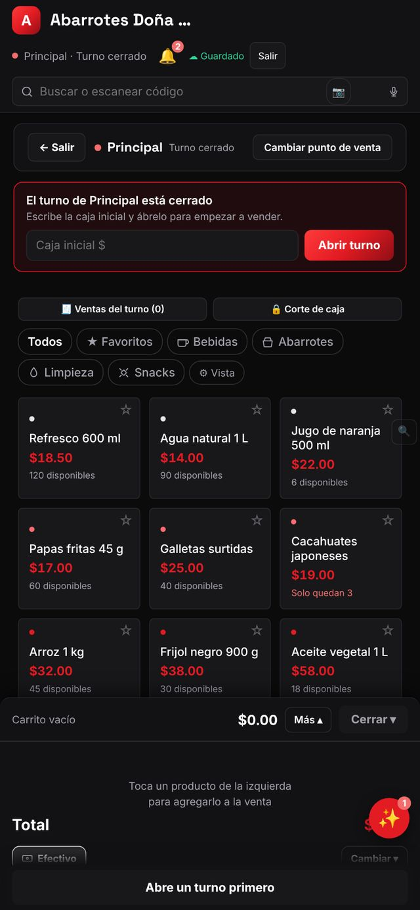
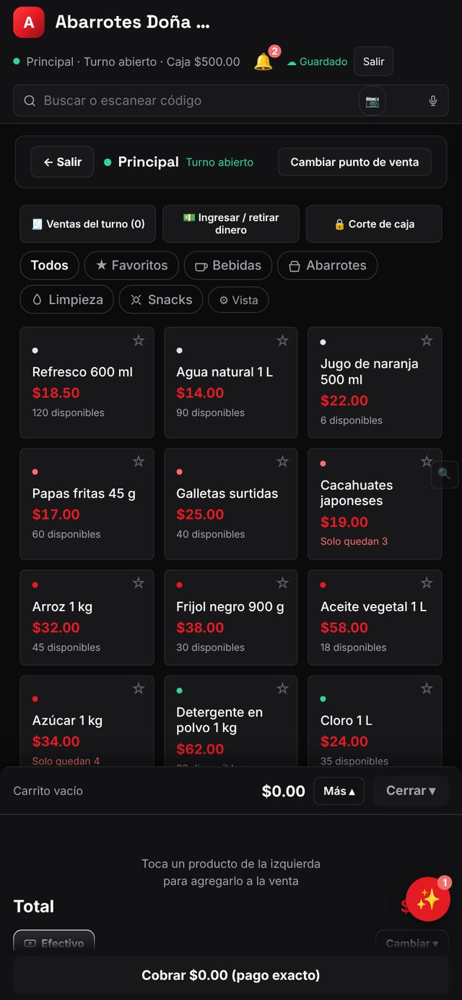
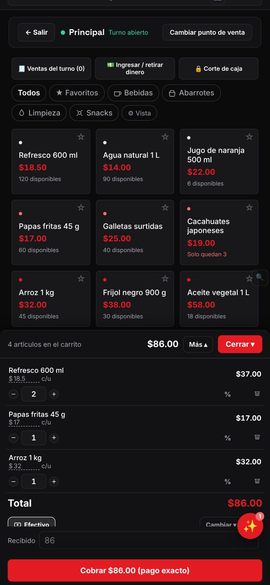
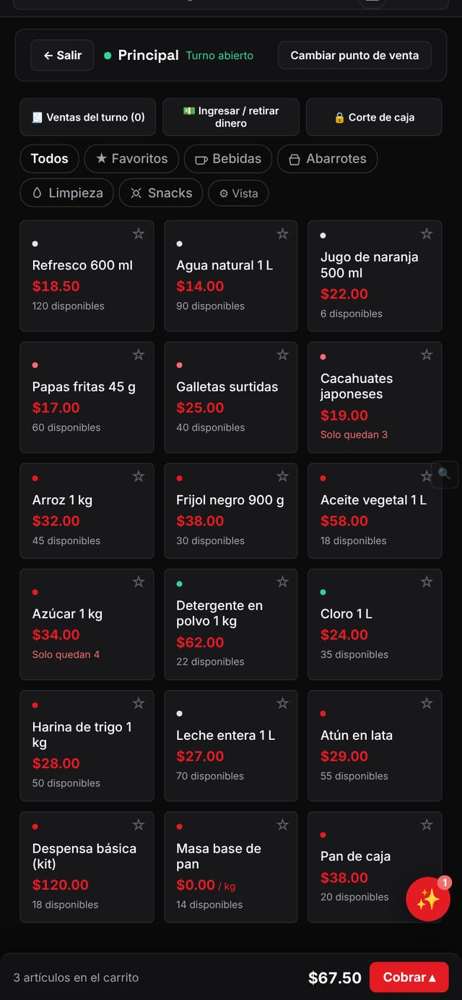

Punto de venta: cómo vender desde tu celular, paso a paso
Abre turno, agrega productos, cobra en efectivo, tarjeta o mixto y entrega el ticket en menos de 30 segundos.
El punto de venta (POS) es la pantalla donde vendes en mostrador. Funciona en celular, tableta o computadora, descuenta el inventario solo y deja todo listo para tu corte de caja. Esta guía te lleva desde abrir el turno hasta cobrar tu primera venta.
Entra al punto de venta
Abre Ventor y toca Punto de venta en la barra de abajo. Arriba verás el nombre de tu caja (por ejemplo «Principal») y si el turno está abierto o cerrado. Si tienes varias cajas o sucursales, toca Cambiar punto de venta para elegir la correcta.

Abre el turno
Mientras el turno esté cerrado no puedes cobrar. Escribe el efectivo con el que arrancas en Caja inicial $ (el «fondo» que dejas para dar cambio) y toca Abrir turno. Si no usas fondo, escribe 0. Ahora arriba aparece «Turno abierto · Caja $500.00» con el monto que registraste.

Agrega productos al carrito
Toca un producto para agregarlo; cada toque suma una pieza. También puedes buscar por nombre o escanear el código de barras con la cámara desde la barra «Buscar o escanear código». Usa los chips (Todos, Favoritos, Bebidas…) para filtrar por categoría y la estrella ☆ para fijar tus productos más vendidos en Favoritos. Debajo de cada precio ves cuántas piezas quedan; cuando quedan pocas aparece un aviso como «Solo quedan 3».

Ajusta cantidades, precio o descuento
En el carrito usa − y + para cambiar la cantidad o toca el número para escribirla. Con el ícono % aplicas un descuento a esa línea y con el bote de basura quitas el producto. Verás el total actualizado abajo.
Elige cómo cobrar
Abajo aparece el método de pago (por defecto Efectivo); toca Cambiar para usar tarjeta, transferencia o pago mixto. En efectivo escribe lo que te entregan en Recibido y Ventor calcula el cambio. Si el cliente paga exacto, el botón dice «Cobrar $86.00 (pago exacto)».

Cobra y entrega el ticket
Toca el botón rojo Cobrar. La venta se registra, el inventario baja y puedes imprimir o compartir el ticket por WhatsApp. El carrito queda vacío para el siguiente cliente.
Revisa lo vendido en el turno
Toca Ventas del turno para ver cada ticket, reimprimirlo o cancelarlo (si tienes permiso). Ingresar / retirar dinero registra entradas o salidas de efectivo que no son ventas, como pagar al repartidor, y Corte de caja cierra el turno.
Consejos
- Marca como favoritos los 10–12 productos que más vendes: te ahorran búsquedas.
- Abre el turno al llegar y haz el corte al irte; así tu efectivo siempre cuadra.
- Si vendes a crédito o a un cliente con facturas, usa mejor la orden de venta (ver «Cotizaciones y órdenes de venta»).
Preguntas frecuentes
¿Puedo vender sin internet?
Sí. La app guarda la venta en el dispositivo y la sincroniza cuando regresa la conexión. El indicador «Guardado» de la parte de arriba te dice el estado.
Se me cerró la app a medio cobro, ¿se pierde la venta?
No. El carrito se conserva y las ventas ya cobradas están guardadas en «Ventas del turno».
¿Cuántas cajas puedo tener?
Depende de tu plan: 1 en Gratis, 2 en Emprendedor, 5 en Pyme y 15 en Empresa. Puedes agregar cajas extra como complemento.
Sigue aprendiendo
Corte de caja: cierra tu turno y cuadra el efectivo
Haz el corte al terminar el día, compara lo esperado contra lo contado y guarda el historial de cortes.
🧾 Ventas y cobranzaHistorial de ventas: busca, filtra, reimprime y cancela
Todas tus ventas de mostrador y órdenes de venta en una sola lista con filtros por fecha, cajero y forma de pago.
🧾 Ventas y cobranzaClientes: alta, crédito, importación y portal
Captura clientes con RFC, teléfono y límite de crédito; importa desde Excel y dales un portal para ver su saldo.
Pruébalo con tu propio negocio
Empieza gratis, sin tarjeta. Si te atoras, escríbenos a impulsorhub@gmail.com.
Abrir Ventor Google Play